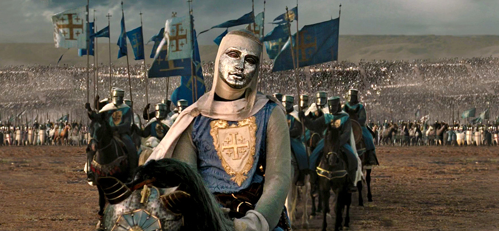
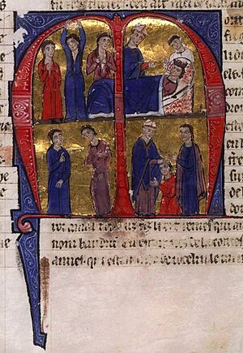

Baldwin IV lahir pada tahun 1161, 60 tahun setelah Amerika Latin terbentuk. Dia adalah putra Amalric, yang merupakan pangeran dari
dua kota terbesar di Amerika Latin, Jaffa dan Ascalon. Amalric juga memiliki seorang putri, Sibylla. Segera setelah kelahiran Baldwin,
Amalric menjadi Raja Yerusalem pada tahun 1163. Ketika Baldwin berusia sembilan tahun, dia diutus oleh ayahnya kepada William dari Tirus.
William adalah seorang terpelajar dan mengajar Baldwin. Baldwin dididik dalam seni perang, sejarah, dan Tuhan. Saat dia bersama William,
dia mulai kehilangan rasa di lengan kanannya. Itu adalah tahap awal dari kondisi yang akan dialami Baldwin selama sisa hidupnya dan penyakit yang dikenalnya: kusta.
Kingdom Of Heaven
Baldwin IV dalam film drama sejarah tahun 2005 Kingdom of Heaven yang diperankan oleh Edward Norton memiliki beberapa fakta unik ketika mengambil peran, antara lain:
Edward Norton secara khusus meminta untuk tidak disebutkan namanya selama penayangan teatrikal film tersebut, karena ingin menjadikan peran Baldwin lebih penting dan berpengaruh dengan menghapus namanya, namun nama itu ditambahkan kembali ke kredit dalam rilis DVD.
Edward Norton juga awalnya akan mengikuti audisi untuk peran Ballian, tetapi bertanya kepada Ridley Scott apakah dia bisa mengikuti audisi untuk Baldwin, karena menganggap peran tersebut lebih menarik dan menantang untuk dilakukan.
Meskipun Kerajaan Surga mendapat sambutan yang beragam dalam penayangan aslinya, penampilan Edward Norton sangat dipuji oleh para kritikus dan penonton, semuanya setuju bahwa dia adalah bagian terbaik dari film tersebut.
Qoutes KING BALDWIN IV
Kutipan King Baldwin IV yang paling terkenal sebelum dia menghukum Reynald dari Châtillon
"Berlutut... lebih rendah. Saya... Yerusalem. Dan kau, Reynald, akan memberiku ciuman kedamaian"
King Baldwin
"Seorang Raja dapat menggerakkan seseorang, seorang ayah dapat mengklaim seorang putra, namun ingatlah bahwa meskipun mereka yang menggerakkan Anda adalah Raja, atau orang yang berkuasa, jiwa Anda berada dalam kendali Anda sendiri. Ketika engkau berdiri di hadapan Tuhan, engkau tidak bisa mengatakan, "Tetapi aku diberitahu oleh orang lain untuk melakukan hal itu." Atau, "Kebajikan tidak nyaman pada saat itu." Ini tidak akan cukup. Ingat itu"
Baldwin sebelum kematiannya kepada Sibylla, Kakak perempuannya
"Saudaraku yang cantik. Sangat cantik. Maafkan aku jika aku telah membuatmu kesakitan. Ingatlah aku apa adanya"
Perang Salib

Baldwin IV dikenal sangat toleran kepada umat beragama non-Kristen di negaranya.
Salahuddin tidak bisa benar-benar membencinya meski pernah dipukul mundur dalam pertempuran Montgisard.
Penobatan King Baldwin IV
William dari Tirus menemukan gejala-gejala lepra pertama Baudouin

Atas: Kematian Amaury I; Bawah: Penobatan Baudouin IV.
Amalric : Ayah King Baldwin IV, Amalric merupakan seorang Raja Yerusalem dari tahun 1163, serta Comte Jaffa dan Ashkelon sebelum aksesinya. Dia adalah putra kedua Melisende dan Foulques, Raja Yerusalem, dan menggantikan kakandanya Baudouin III.
Agnes dari Courtenay : Ibu King Baldwin IV, merupakan putri Joscelin II dari Edessa oleh istrinya Beatrice, dan ibunda raja Baudouin II dari Yerusalem dan ratu Sibylla dari Yerusalem.
Sibylla: Kakak Kandung King Bladwin IV, Sibylla adalah ratu Yerusalem dari tahun 1186 hingga 1190. Ia memerintah bersama suaminya Guy dari Lusignan, yang sangat dekat dengannya meskipun suaminya tidak populer di kalangan baron Kerajaan Yerusalem. Sibylla adalah putri sulung Raja Amalric dan putri tunggal Agnes dari Courtenay.
Baldwin IV dari Jerusalem
King Baldwin IV, Raja Kusta Yang Dihormati
No
Tentang
Riwayat
1
Kelahiran
1161, Yerusalem
2
Meninggal
6 Maret 1185, Kerajaan Yerusalem
3
Tempat Pemakaman
Gereja Makam Kudus, Yerusalem
4
Orangtua
Amaury I dari Yerusalem, Agnès de Courtenay
5
Saudara Kandung
Sibylla
6
Buyut
Baudouin II dari Yerusalem, Foulques IV dari Anjou, Bertrade of Montfort, Joscelin I, Morphia of Melitene